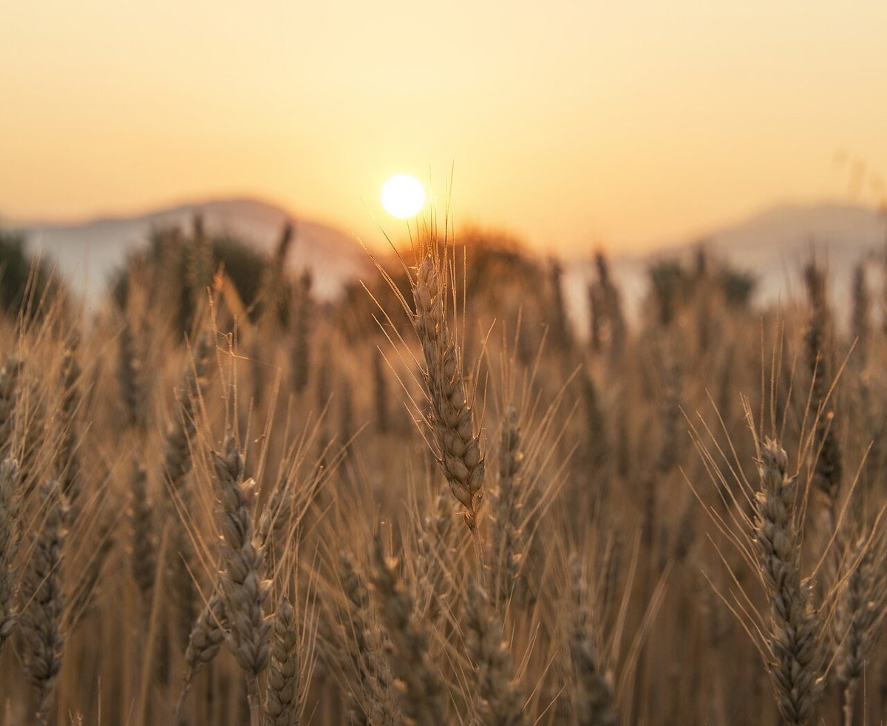
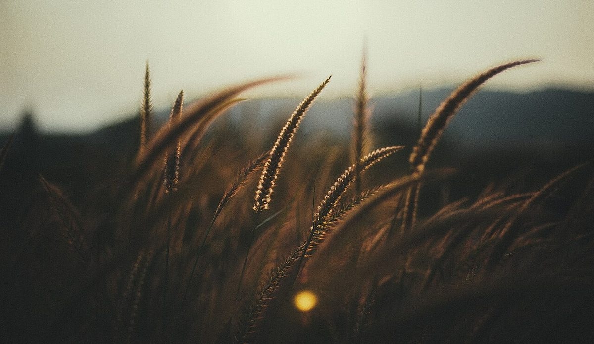
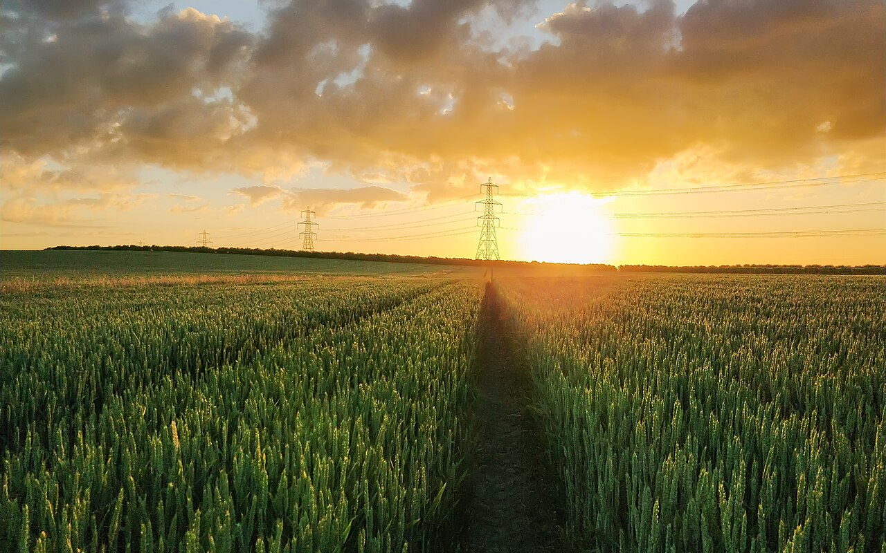
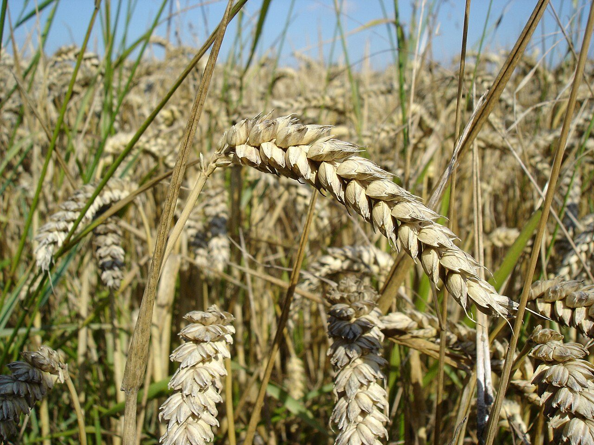

ABOUT
食べて美味しいのはもちろん。食べるとホッとするお店に。
ORION BAGELは、2025年3月21日に宮城県岩沼市たけくまでオープンしたベーグル専門店です。ご夫婦で営まれていると紹介されています。
目指すのは、美味しいのは当然のこと、食べるとホッとするようなお店。小麦の味や香りが感じられるベーグルを大切にしている、と紹介されています。
北海道産小麦「キタノカオリ」を使い、噛めば噛むほど小麦の甘みと香りが広がる、もちもち食感で口溶けのよい生地です。
※ 店名の由来は確認できていません。このページの文章・配色は、上記の理念を元にした制作側のイメージです。


MENU
プレーンから、月がわりの創作まで。
紹介記事などによると、次のようなベーグルが並ぶようです。内容は日により変わるため、最新はInstagramをご確認ください。
価格: 準備中 営業時間・定休日: 準備中


WHEAT & DOUGH
小麦から、生地、焼きたてへ。
写真は、小麦のイメージです。お店の実際の様子ではありません。





VOICE
口コミ(イメージ例)
イメージ例
もちもちで、噛むほどに小麦の味がします。朝ごはんにしたくなりました。
イメージ例
月がわりのベーグルが楽しみで、つい足を運んでしまいます。
イメージ例
素朴な味でほっとします。ご近所にあると嬉しいお店です。
※ 制作側が作成したイメージ例で、実在のお客様の声ではありません。